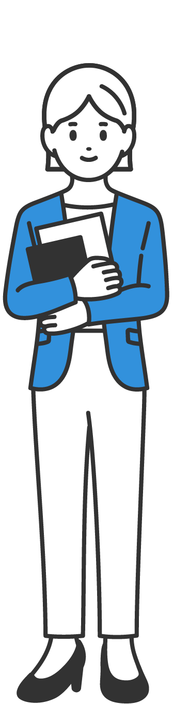
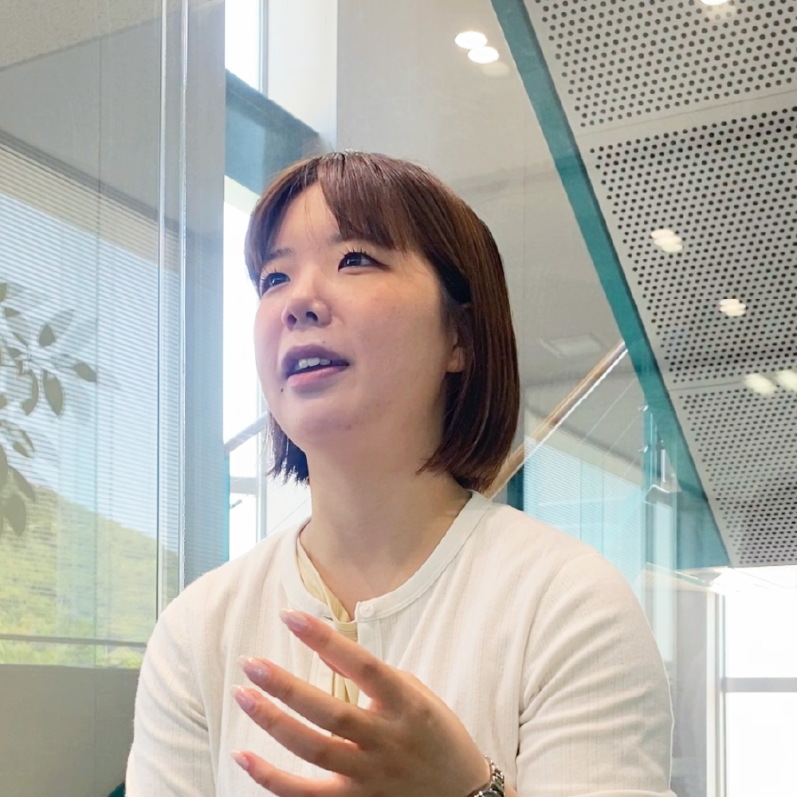

暮らしに寄り添う提案を。

下関営業所
2026年入社（新卒）
家具営業
S.Mさん

インタビュー
仕事内容
マテリアと呼ばれる
家具営業を担当している
入社の経緯や決め手
人との出会いが、
入社の決め手に
出身は長崎県で、大学も長崎県内の大学に通っていた。大学では建築系の学部に所属していたことから、就職活動では建築業界を中心に見ていた。
最初のきっかけは、就職活動サイトであるオファーボックスからスカウトをいただいたことだった。その後、面接前に礒部さんとオンラインで何度か面談する機会があり、その中で三和にエントリーすることを決めた。
入社を決めた理由として最も大きかったのは、140年以上続く企業の歴史である。将来性があり、長く続いていく会社で働きたいと考えていたため、長い歴史があることへの安心感や、山口県内でシェアNo.1という安定した業績に魅力を感じた。
最終的な決め手となったのは礒部さんの人柄である。他の企業とも何度も面談を行ったが、ここまで何でも質問に答えてくださり、話しやすい方はいなかったと感じている。その対応はずば抜けており、人事担当者である礒部さんの人柄の良さが、企業全体への信頼感につながった。
入社前に感じた印象と入社後のギャップ
入社前の安心感は、
入社後も変わらなかった
入社前から礒部さんに対する信頼感は強く持っていた。また、社員の方々も非常に優しく、自然体で接してくださる方ばかりであると感じていた。
入社前には会社へ来る機会もあり、社員の方々と関わる機会が多かったため、大きな安心感があった。入社後も顔を知っている社員が多くいたことで、不安なく仕事を始めることができた。
実際に営業所で働き始めてからも、社員の皆さんは人当たりが良く、営業職の方々は話し上手で面白い人が多いと感じている。営業職にはガツガツした人が多いというイメージを持っていたが、実際には物腰の柔らかい方が多く、とても居心地が良い。また、オンとオフの切り替えが上手な方が多いと感じている。
仕事のおもしろさややりがい
仕事の知識が、
暮らしも豊かにする
カーテンや照明は、普段あまりこだわらずに選んでいる方も多いと思う。しかし、この仕事を通じてそうした分野について深く学ぶことができる。
学んだ知識はお客様の生活をより豊かにするために活かせるだけでなく、自分自身の生活にも役立てることができる。そのため、自分のためにもなり、自分自身の暮らしにも興味が持てるようになったことがおもしろいと感じている。
働き方について
お客様と一緒に
理想の空間をつくる
入社前から三和には建材営業とマテリアの両方の事業があることは知っていたが、採用時は建材営業として採用された。その後、縁があり現在は家具営業を担当している。
現在はカーテンの採寸や家具に関する知識の習得に取り組んでいる。また、建売住宅に設置する家具の選定なども行っている。建売住宅とは、会社が先に住宅を建築し、お客様に見学・購入していただく物件である。
下関営業所では、マテリア部門の女性社員と事務員の方が女性で、それ以外の建材営業担当者は男性である。営業所内での人間関係によるストレスは少なく、働きやすい環境であると感じている。
また、マテリアは一般的な営業職のイメージとは少し異なる。BtoCの側面もあり、お客様がカーテンなどを選ばれる際には直接お話ししながら、一緒にカタログを見て提案を行うこともある。今後もマテリアの仕事を続けていくことになると思う。
社風について
支え合いの文化が
根付く職場
今年から産休に入る社員の方がいるが、その方をどのようにフォローするかについて会社全体で話し合いが行われている。そうした助け合いの雰囲気が非常に魅力的だと感じている。
また、企業として実績や業績があることも大きな魅力である。長い歴史があるからこそ、地域のメーカーや工務店、お客様からの信頼も厚い。昔からのつながりで取引が続いているお客様も多く、働いていて歴史ある企業だと実感する場面もある。
実際に、以前三和と関わりのあった工務店で家を建てた方が、後になってカーテンや照明の交換のために連絡をくださることもある。
また、入社後すぐに営業所内のほとんどの社員の方が仕事を教えに来てくださった。そのため、部署へ配属された後も知っている人ばかりの環境で安心して仕事ができている。
中小企業だからこそ、一人ひとりに対してマンツーマンで教えてもらう機会が多く、社員一人ひとりをしっかり見てくれていると感じる。昼食も社員同士で外へ食べに行くことがあり、交流する機会が多い。
学生時代の経験で現在活かされていること
大学では建築系の学部に所属していたが、学んだ専門知識以上にアルバイトでの接客経験が役立っていると感じている。
現在の仕事では人と話す力が非常に重要であり、学生時代に培ったコミュニケーション能力が活かされている。
今後のビジョンやキャリアプラン
成長を重ね、
次のステージへ
今後はどんどん昇格していきたいと考えている。
まずは2年目になるまでに知識をさらに身につけ、何を聞かれてもすぐに答えられる頼れる社員になりたい。そのためにも日々学び続けていきたいと考えている。
また、現在は手厚く指導していただいており、長く働き続けられそうだと感じている。その分、早く成長しなければならないという思いも強く持っている。
休日の過ごし方
自然も都会も
楽しめる休日
家族が遊びに来た際には海響館へ出かけた。
また、自宅の近くでは夕日がとてもきれいに見えるため、散歩をしながら景色を楽しむこともある。下関は福岡にも近いため、休日には福岡へ出かけることもある。
山口県の魅力
人も街も、
あたたかい
山口県の人は本当に優しいと感じている。お店の方も会社の方も驚くほど親切である。また、出身地である長崎県と比べると坂が少なく、生活しやすい環境だと感じている。本当に良いところだと思う。
就活生へのメッセージ
知らない世界だからこそ、
おもしろい
建材業界と聞くと難しそうなイメージを持ったり、仕事内容が想像しにくかったりするかもしれない。しかし、知らない分野だからこそ学べることが非常に多い仕事である。
また、この仕事ではさまざまな人と関わることができる。家を建てる工務店の方々、商品をつくるメーカーの方々、家具を選ばれる一般のお客様など、多くの人との出会いがある。
そのため、自分自身のスキルを磨き、成長する機会も非常に多い。あまり難しく考える必要はないと思う。人も環境も良い会社なので、ぜひ!
タイムスケジュール
営業マンの1日
| 08:00 | 出社＆朝礼 |
|---|---|
| 10:00 | 現場確認 |
| 11:00 | 配送段取り |
| 12:00 | 昼食 |
| 13:00 | 資材の訪問提案 |
| 15:00 | 見積作成 |
| 17:00 | 退社 |
経営管理課 課長の普通の1日
| 08:00 | 出社＆メールチェック |
|---|---|
| 10:00 | 伝票＆各書類チェック |
| 12:00 | 昼食 |
| 13:00 | 来客対応 |
| 15:00 | 各種打ち合わせ |
| 17:00 | 退社 |
経営管理課 課長のアクティブな1日
| 08:00 | 出社＆メールチェック |
|---|---|
| 10:00 | 銀行訪問 |
| 11:00 | 顧問会計事務所で打ち合わせ |
| 12:00 | 昼食 |
| 13:00 | リクルート対応 |
| 15:00 | 社内打ち合わせ |
| 17:00 | 退社 |